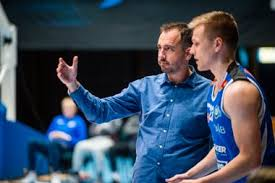
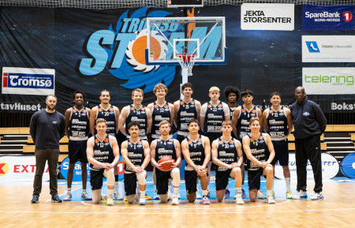

SnartTerminlisten kommer
HjemmekampVSRødtindhallen
?Publiseres snart
Billettinfo

Mer energi. Større ambisjoner. Tromsø Storm er tilbake på øverste nivå.
Nye spillere. Ny sesong. Samme kompromissløse kraft fra nord.
Fra Tromsø Basketballklubb til Tromsø Storm – historien fortsetter.
2,06 meter, internasjonal erfaring og et trepoengsskudd som åpner banen.
Les saken →
Årets trener i BLNO 2022/23 leder et nytt og ambisiøst prosjekt.
Les saken →
Robert Holm og Jeff Lange ledet klubben til det første NM-gullet.
Se historien →
En sterk nordnorsk stamme, unge talenter og internasjonal erfaring.
Historikken fra dagens WordPress-side skal bevares og løftes frem – ikke gjemmes i et arkiv.
Tromsø Basketballklubb blir starten på organisert toppbasket i byen.
Robert Holm leder dame- og herrelaget til henholdsvis sølv og bronse.
Klubben vinner sitt første NM-gull med Robert Holm og Jeff Lange.
Et nytt kapittel begynner med Sergio tilbake og større ambisjoner.
Den nye WordPress-løsningen kan gjøre mer enn 400 sider med innhold søkbart etter sesong, person og tema.
Utforsk dagens arkiv →Barn under 16 år kommer gratis inn.